分式和分式方程
【分式】
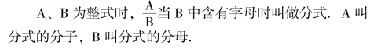
【有理式】 整式和分式统称有理式.
【分式的基本性质】
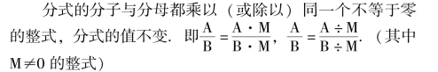
根据分式的基本性质，分子、分母同时改变符号，分式的值不变.
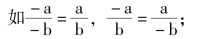
如果只改变分子或分母的符号，分式的本身的符号同时改变时，分式的值不变.
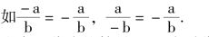
注意: 分式的符号可以移到分式的分子或分母上，但必须把分子和分母整个改变符号.
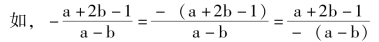
为了避免错误，要把多项式的分子或分母括在括号内.
【最简分式】
分式的分子和分母互质时叫最简分式，互质即没有1以外的公因式，最简分式也叫既约分式.
【约分】
把一个分式的分子和分母的公园式约去化成最简分式的运算.
注意: 约分时，要先将分式的分子和分母分解成因式连乘积的形式.
【约分的方法】
先把分式化成整系数的分子分母；再把分子、分母因式分解(化成积的形式)；约去数字因数的最大公约数；约去同底数的最低次幂.
【分式的乘法法则】
分式乘以分式，用分子的积作为积的分子，分母的积作为积的分母，再把它约分成最简分式.
【分式的除法法则】
两个分式相除，把除式的分子、分母颠倒位置后，与被除式相乘.
【分式乘方的法则】
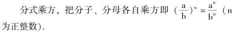
【同分母的分式加减法的法则】
同分母分式相加减，把分子相加减，分母不变.
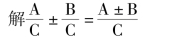
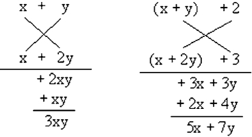
∴原式＝ (x ＋y ＋2) (x ＋2y ＋3).
这种方法叫双十字相乘法.
【通分】
根据分式的基本性质，把几个异分母的分式分别化成与原来的分式相等的同分母的分式，叫做分式的通分.
【通分的方法】
(1) 将各分式的分母化成因式积的形式.
(2) 求最简公分母: 下列各部分的积.
①数字因数的最小公倍数.
②同底数因式的最高次幂.
③不同因式
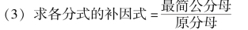
(4) 根据分式的基本性质，将各分式分子、分母乘以各自的补因式.
【异分母公式的加减法】
先通分化成同分母的分式，再按同分母分式加减计算.
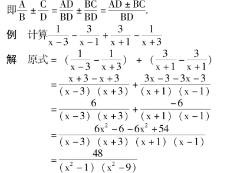
说明: 有时适当分组可以简便.
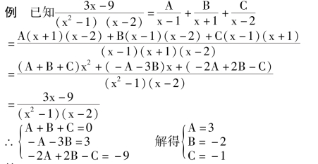
答: A ＝3，B ＝－2，C ＝－1.
说明: 把分式分成几个相关分式的和，可以用比较系数的方法.列成方程组.解出所求的值.
【繁分式】
分式的分子或分母中含有分式的分式叫繁分式.繁分式的化简可用分子÷分母，按分式除法运算；也可以利用分式的基本性质求出繁分式的分子和分母的分式的最简公分母，同乘之，使之化简.
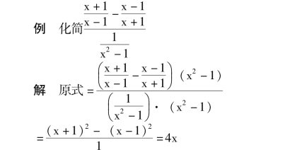
说明: 为了简便运算，繁分式隔层可以约分，但要将繁分化成四层
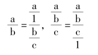
【公式变形】
把一个公式从一种形式变换成另一种形式，叫做公式变形.
公式变形可看成是解含有字母已知数的方程.
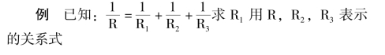
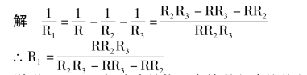
说明: (1) 已知公式是物理中并联电路的总电阻与各分电阻的关系式.(2) 公式变形本质是解关于某一未知数的方程.
【整式方程】
分母里不含有未知数的方程叫做整式方程.
【分式方程】
分母里含有未知数的方程叫做分式方程.
【分式方程的解法】
(1) 在方程的两边都乘以最简公分母，约去分母，化成整式方程；
(2) 解这个整式方程；
(3) 把整式方程的根代入最简公分母进行检验.最简公分母＝0 时为增根，舍去；最简公分母≠0 时，为原分式方程的解.
【增根】
在方程变形中，有时产生不适合原方程的根，这种根叫做原方程的增根.
产生增根的原因是因为方程变形中破坏了同解.一般是因为方程两边同时乘了同一个含有未知数的整式或方程两边同时乘方的结果.